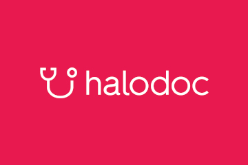

Bekerja Sama Dengan

Halodoc
Still waiting in line at the pharmacy? Leave the old way and switch to a new way! Buy medicine from a trusted pharmacy, d elivered directly to your location. You can buy over-the-counter medicines or redeem doctor's prescriptions through the Halodoc application.

Alodokter
All ALODOKTER features are available in web and mobile app versions that are easily accessible via computers or smart phones by all Indonesians, anytime, anywhere. Enjoy the convenience of finding the most complete health information with a fast response, as well as the services of experienced general practitioners and specialists spread throughout Indonesia.
Medi-Call
Medi-Call is an application that offers several main services such as home visit services for doctors, nurses, midwives, physiotherapy, vaccines,vitamins, and medical consultation services.